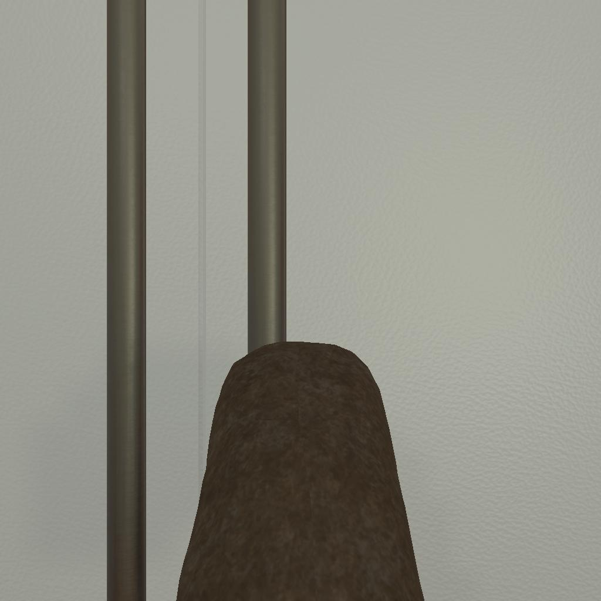

---------------------------------------------------------task: 17---------------------------------------------------------
--------------------------------------------------------------------------------------------------------------------------------------------------------------------
--------------------------------------------------------------------------------------------------------------------------------------------------------------------
Step:--------------------------------------------------------------------------17-------------------------------------------------------------------------------
----------------------------------------
VLM Prompt:
**Task**
Please perform as an embodied AI agent. Our final objective is to cool some pan and put it in stoveburner. Below is the plan for completing the task, the current observation, alongside historical data and admissible actions for the next step. Please determine the best action for the next step!
**Plan**
Below is a detailed step-by-step plan to complete the task.
1. Find a pan.
2. Pick up the pan.
3. Find a fridge.
4. Cool the pan with the fridge.
5. Find a stove burner.
6. Place the cooled pan on the stove burner.
**Current Observation**
Displayed is an image capturing the current position of the agent.
**History Information**
Displayed are the previous observations with their corresponding actions.
State 1:
1. Step Index in the Plan: 1
2. Objects: Sink, Cup, Funnel
3. Action: go to cabinet 1
State 2:
2. Step Index in the Plan: Unknown (plan is to find a pan)
3. Objects: Wooden Floor (no visible relevant objects)
4. Action: go to cabinet 3
State 3:
1. Step Index in the Plan: 1
2. Objects: Wooden Floor (no visible objects)
3. Action: open cabinet 3
State 4:
1. Step Index in the Plan: 1
2. Objects: None visible
3. Action: go to cabinet 2
State 5:
1. Step Index in the Plan: 1
2. Objects: Wooden Floor (no visible objects related to the task)
3. Action: go to cabinet 4
State 6:
1. Step Index in the Plan: 1
2. Objects: Countertop, Microwave
3. Action: go to cabinet 11
State 7:
1. Step Index in the Plan: 1
2. Objects: Cabinet (or Countertop), No visible objects related to the task
3. Action: open cabinet 11
State 8:
Step Index in the Plan: 1
Objects: Wooden Floor, Bottom of Cabinet/Countertop
Action: go to cabinet 5
State 9:
1. Step Index in the Plan: 1
2. Objects: Countertop, Microwave
3. Action: go to cabinet 12
State 10:
1. Step Index in the Plan: 1
2. Objects: Countertop, Toaster, Cabinet
3. Action: go to cabinet 6
State 11:
1. Step Index in the Plan: Not specified but involves finding a pan
2. Objects: Countertop, Microwave
3. Action: go to cabinet 7
State 12:
2. Step Index in the Plan: Unknown
3. Objects: Countertop, Copper Pans
4. Action: go to countertop 1
State 13:
1. Step Index in the Plan: 2
2. Objects: Countertop, Copper Pans
3. Action: take bread 1 from countertop 1
State 14:
1. Step Index in the Plan: 2
2. Objects: Copper Pans
3. Action: pick up copper pan
State 15:
1. Step Index in the Plan: Not specified
2. Objects: Copper Pans
3. Action: go to fridge 1
State 16:
1. Step Index in the Plan: Not specified (implied to follow after picking up the pan)
2. Objects: Copper Pan (previously picked up), Fridge
3. Action: open fridge 1
State 17:
1. Step Index in the Plan: 4
2. Objects: Copper Pan, Fridge
3. Action: cool bread 1 with fridge 1
**Admissible Actions**
(1): go to cabinet 1
(2): go to cabinet 2
(3): go to cabinet 3
(4): go to countertop 1
(5): go to cabinet 4
(6): go to cabinet 5
(7): go to microwave 1
(8): go to cabinet 6
(9): go to drawer 1
(10): go to drawer 2
(11): go to drawer 3
(12): go to cabinet 7
(13): go to cabinet 8
(14): go to sink 1
(15): go to sinkbasin 1
(16): go to coffeemachine 1
(17): go to cabinet 9
(18): go to cabinet 10
(19): go to drawer 4
(20): go to cabinet 11
(21): go to stoveburner 1
(22): go to stoveburner 2
(23): go to stoveburner 3
(24): go to stoveburner 4
(25): go to cabinet 12
(26): go to toaster 1
(27): go to drawer 5
(28): go to countertop 2
(29): go to cabinet 13
(30): go to cabinet 14
(31): go to diningtable 1
(32): go to garbagecan 1
(33): go to safe 1
(34): close fridge 1
(35): put bread 1 in/on fridge 1
(36): examine bread 1
**Analysis Guideline**
1. Analyze the history and current observation, and then determine our current step in the plan and our current place.
2. List all visible objects related to the task in the current observation, without summarizing any as "various items."
3. Analyze the objects in the current observation based on the history and the requirements for the current step, and then determine if we can complete the step with the current observation.
4. Analyze and decide on the most appropriate action to take.
5. Summarize the analysis using the following format: "Analysis: [The summarization of the analysis], The Most Appropriate Action: (i which is the integer.): [Selected action]"
**Notes**
1. We must complete each step of the plan in order and cannot skip steps when the previous ones are not finished.
2. For "Go to" actions listed as "go to xxx [n]", interpret this as there are n distinct actions available: "go to xxx 1", "go to xxx 2", ..., "go to xxx n". Select one specific action from these options instead of using "go to xxx [n]".
3. If receptacles such as drawers, cabinets, and so forth are closed in the current observation, we may try to open them.
4. Pay attention to synonyms and ensure clarity in the terms used.
5. We must determine and provide the single action which must be in the **Admissible Actions**.
6. If there is no history available, we are at the first step and the current place is "Unknown".
**Answer**
Please select the most suitable action by following the **Analysis Guideline**, keeping the above **Notes** in mind.
----------------------------------------
----------------------------------------
VLM Response:
Analysis: According to the plan, we have already completed steps 1 through 4, which involved finding and cooling the pan with the fridge. The current step in the plan is step 5, which is to find a stove burner. The current observation does not display any stove burners or objects related to the task. Therefore, we cannot complete the current step with the current observation. Based on the admissible actions, the most appropriate action to take is to go to a stove burner.
The Most Appropriate Action: (21): go to stoveburner 1
----------------------------------------
----------------------------------------
>>> Refine VLM Response and Get Pure Action: go to stoveburner 1
----------------------------------------
-----------------------------------------------------------------
Running time: 7.003892183303833 seconds
Total Money: 0
-----------------------------------------------------------------
-----------------------------------------------------------------
Summarization Prompt:
**Context**
Analysis: Since there is no history information, we are at the first step in the plan, which is to find a statue. The current place is unknown. In the current observation, we see a floorlamp next to an armchair with a small table that has a small object on it, which could potentially be the statue we are looking for. Since the plan requires us to find a statue first and it appears there might be one on the table next to the armchair, we should investigate this object to determine if it is the statue we need.
The Most Appropriate Action: (1): go to armchair 1
**Summary**
1. Step Index in the Plan: 1
2. Objects: Floorlamp, Armchair, Small Table, Small Object (potential statue)
3. Action: go to armchair 1
**Context**
Analysis: According to the plan, we have already completed steps 1 through 4, which involved finding and cooling the pan with the fridge. The current step in the plan is step 5, which is to find a stove burner. The current observation does not display any stove burners or objects related to the task. Therefore, we cannot complete the current step with the current observation. Based on the admissible actions, the most appropriate action to take is to go to a stove burner.
The Most Appropriate Action: (21): go to stoveburner 1
Please summarize the context by following above examples when providing the summary, and ensure that only the summary is included, without any extra explanation.
**Summary**
-----------------------------------------------------------------
-----------------------------------------------------------------
Summarization Response:
1. Step Index in the Plan: 5
2. Objects: None relevant to the current task
3. Action: go to stoveburner 1
-----------------------------------------------------------------
-----------------------------------------------------------------
Text Observation:You arrive at loc 20. On the stoveburner 1, you see a pan 1, a soapbottle 1, a stoveknob 1, and a egg 1.
-----------------------------------------------------------------
UNSUCCEED